| 日付 | 2014年12月28日（日） - 2014年12月31日（水） | ||
|---|---|---|---|
| 山域 | 四国の山 | ||
| メンバー | 家族（妻、長女・3歳、長男・1歳） | ||
| 山行形態 | 子連れ3泊4日ホテル泊 | ||
| アクセス | 車、船 | ||
| ルート (Map) |
|
3日目
小豆島で2泊した宿「ビジネスホテル ニューポート」を後にする。
値段の割に食事は豪華で、良い宿だった。
風呂は小さかったが、観光でも十分に使える宿だ。
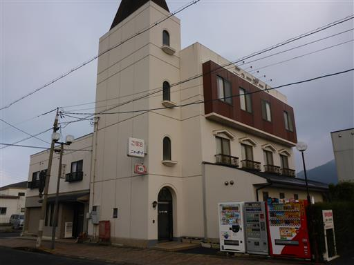
小豆島で行きたかったところは、昨日あらかた訪れた。
今日は土渕海峡の側にある迷路のまちに行く。
敵に攻められたときに備えて路地を迷路状にしたものが、今でも残っている。
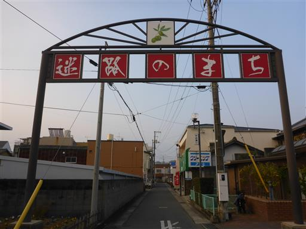
側にあった地図。この地図だと全然迷路に見えない。
もう少し何とかならなかったのだろうか？
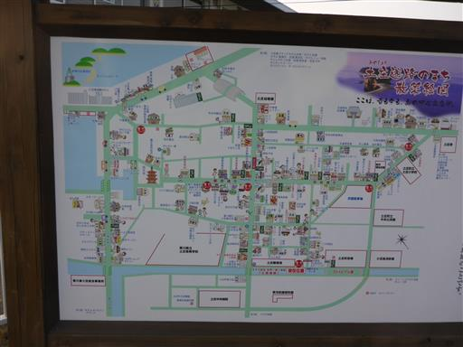
路地を歩いていると和菓子屋を見つける。ここで帰省用の手土産を購入。
小さなお菓子もいくつか買って店内の椅子に座って食べる。
おまけのお菓子も頂いて、子供たちは喜んでいた。
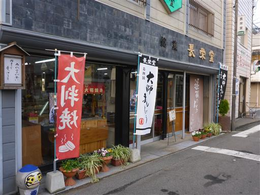
路地にはあちらこちらに変わった人形が置かれている。
一体一体顔が違うようだ。
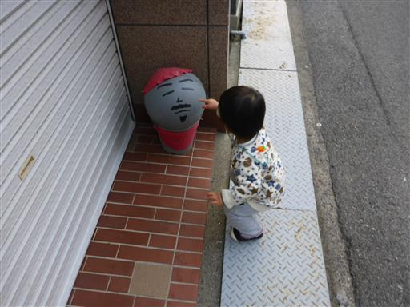
いっぱい並んでいる。
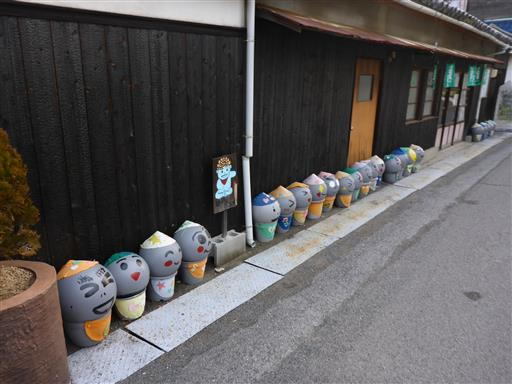
西光寺に到着。迷路のまち内で一際目立つ場所だ。
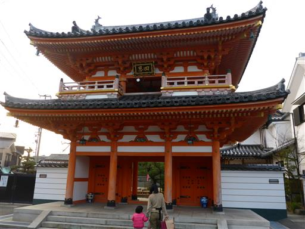
ここにも人形が置かれている。
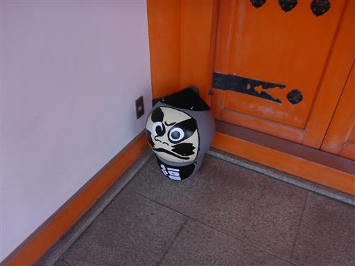
本堂と三重塔。三重塔は高台にあって展望が良さそうだったが、
そこに至る道が通行止めになっていて、残念ながら近づくことができなかった。
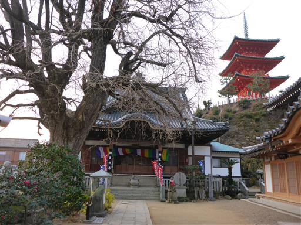
曲がりくねった小道を歩いていく。

しばらく歩くと小さな入り江に到着する。
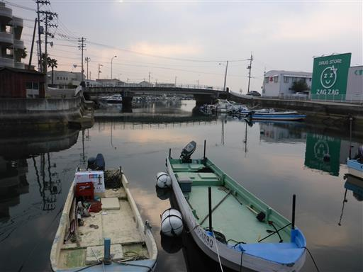
しばし海を見学。小さなボートが並んでいる。
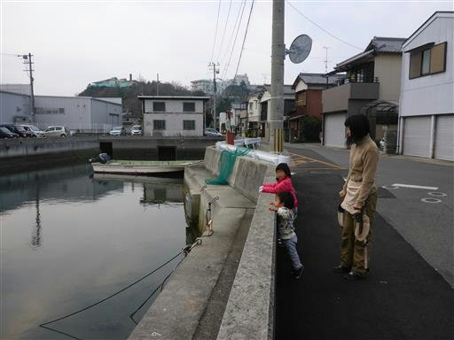
途中で娘がトイレに行きたいと言い出したので、2人でダッシュ。
道に迷うことなく駐車場にあるトイレに到着。何とか間に合った。
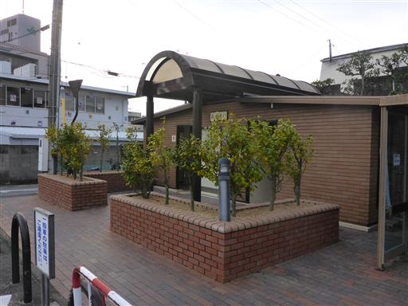
息子は足が遅い。待っている間、辺りをブラブラする。
今日は良く晴れていて、山がはっきり見える。
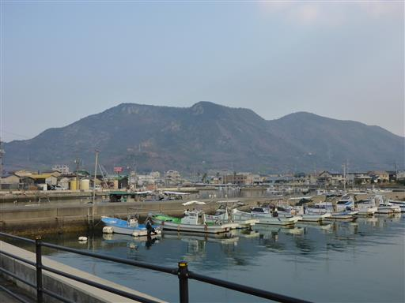
妻と息子が車に戻ってきたら、次なる目的地のエンジェルロードに向かう。
小豆島では寒霞渓と並んで有名な観光スポットだ。
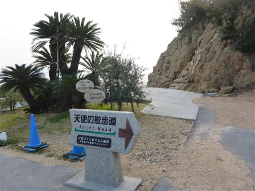
エンジェルロードとは隣の小島と砂州で繋がる道のこと。
満潮時は海に隠されるが、干潮になると砂の道が現れる。
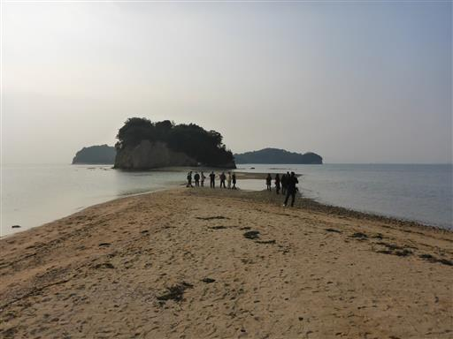
海岸沿いにはホテルなどの建物が建ち並んでいる。
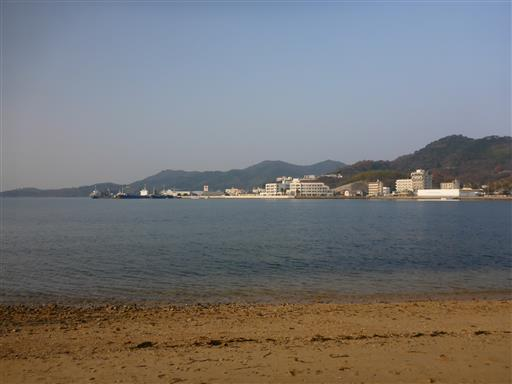
事前の下調べによると本日の干潮時刻は12:07。前後3時間程度は道が繋がるらしい。
現在9:30だがまだ繋がっておらず、観光客が繋がるのを待っている。
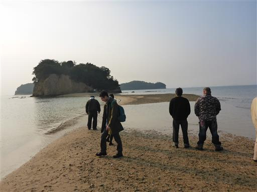
子供たちは磯遊びだ。
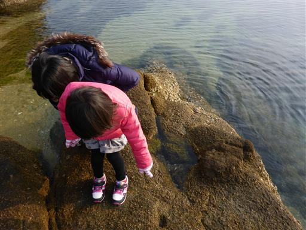
フナムシに似ている何かの生物。突っついても動かないが何者だろう？
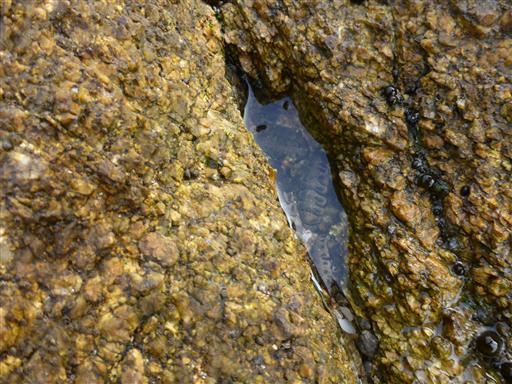
側に岩壁を持った高台がある。
上に続く道があったため、子供が磯遊びに興じている間に一人で登ってみる。
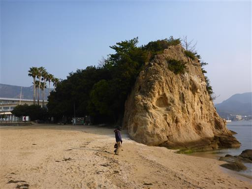
上部は展望台になっていて、ここにも観光客が数名いる。
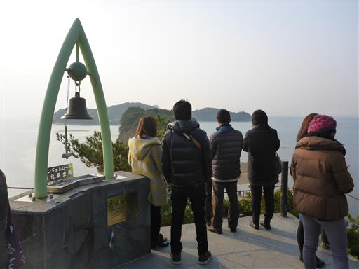
エンジェルロードを展望台から見下ろす。
ここからだと砂州の道が良く見える。
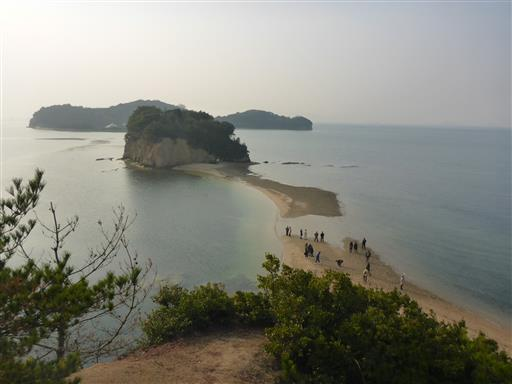
海の水は非常にきれいだ。
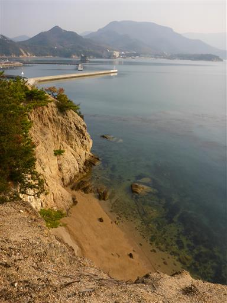
海が太陽の光を反射している。奥に見えるのは三都半島だろうか？

磯遊びをしながら砂州が繋がるのを待っていたが、なかなか繋がらない。
10:20の船で高松に移動したいため、エンジェルロードを渡るのは諦めて土庄港に向かう。
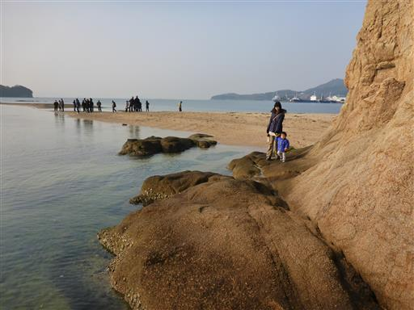
土庄港に到着。小豆島には港が多数あるが、ここが一番大きな港だ。
どこに向かう船がどこに接岸するか、図示されている。
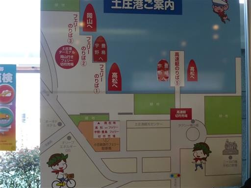
主要港だけあって、大きな土産物屋がある。
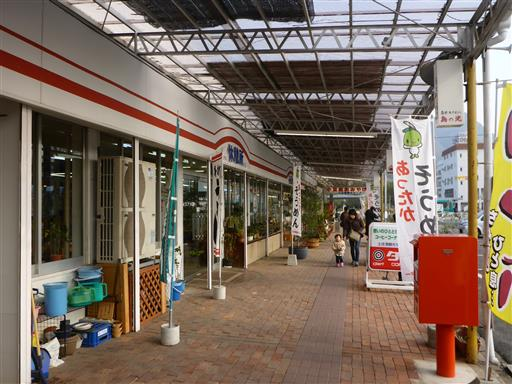
子供たちはオリーブしまちゃんの人形と遊んでいる。
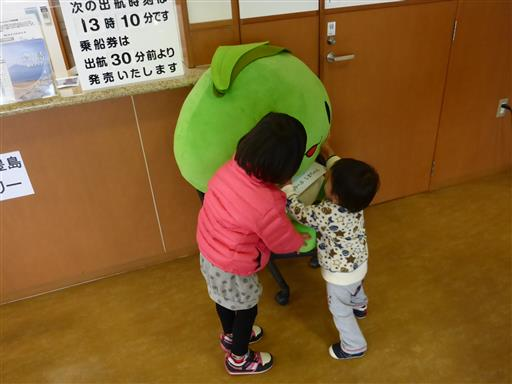
フェリーが港に到着。車に戻って乗船する。
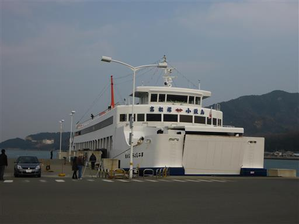
船内の様子。午前便は比較的空いているらしい。
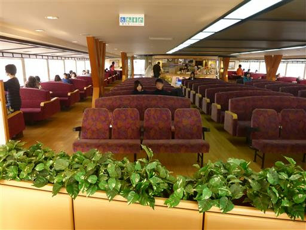
甲板からは山が良く見える。小豆島は全体が山がちな地形だ。
瀬戸内海の島々の最高峰も小豆島にある。
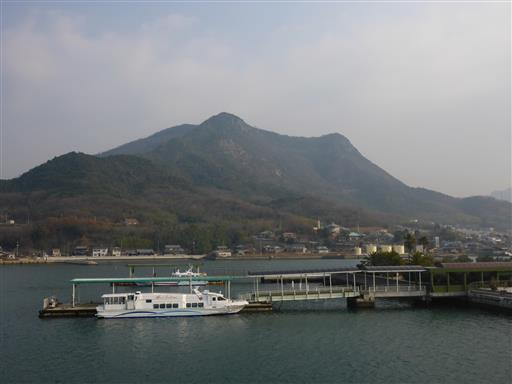
ターミナルビルの裏には、今回泊まったホテルが見えている。
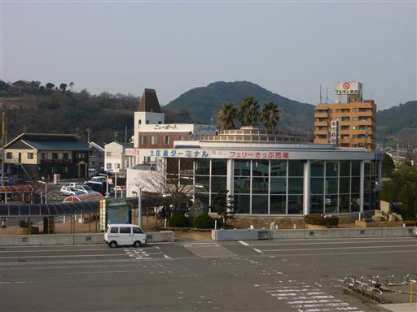
海岸には醤油工場が見える。この島は観光だけでなく産業も発達している。
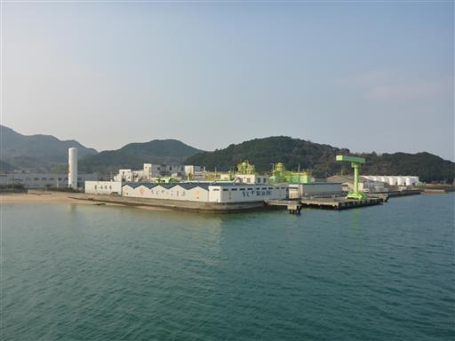
出航。小豆島とはこれでお別れだ。
船でしか来れない場所であり、なかなか再訪の機会は無いだろう。
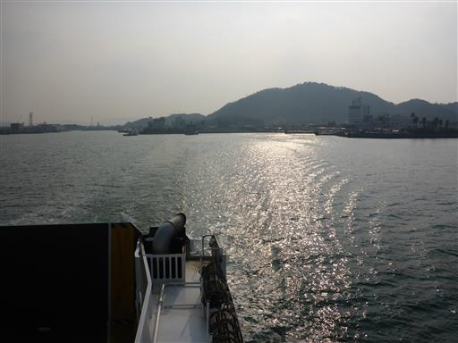
高松から小豆島に向かう船とすれ違う。
土庄－高松間は1時間に1本ほど便が出ている。
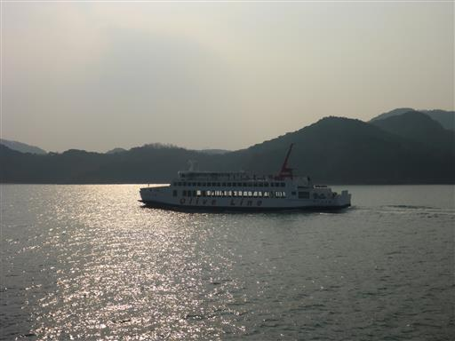
甲板は無人だ。
歩くとよろめくほどの風の強さで確かに寒いが、天気は良く気持ちが良い。
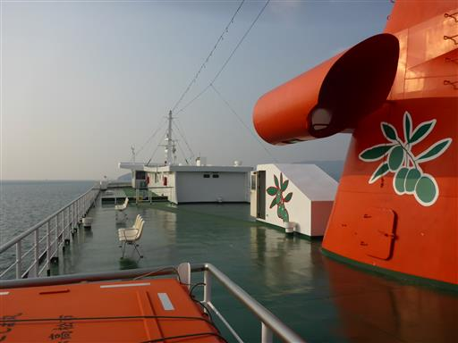
豊島を始め瀬戸内海の島々を眺める。
しばらく展望を楽しんだら船内に戻る。
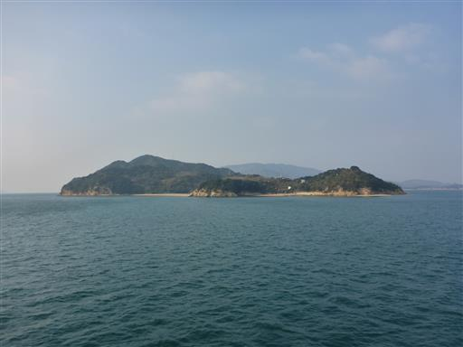
高松港が見えてきた。高松市街中心部のすぐ側に港がある。
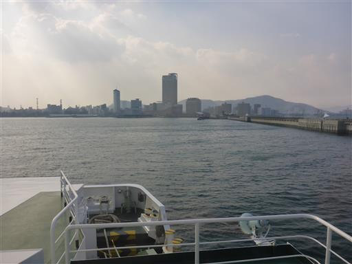
高松は香川県の県庁所在地。香川と言えば讃岐うどんだ。
人気のうどん店「手打うどん麦蔵」へ行く。
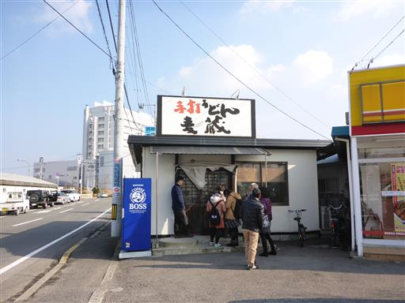
料理が出て来るまでの待ち時間、娘がグズったので店の周りをうろつく。
店の前からは巨大な船が見えている。
うどんはさすが讃岐うどんの本場だけあっておいしかった。そして安かった。
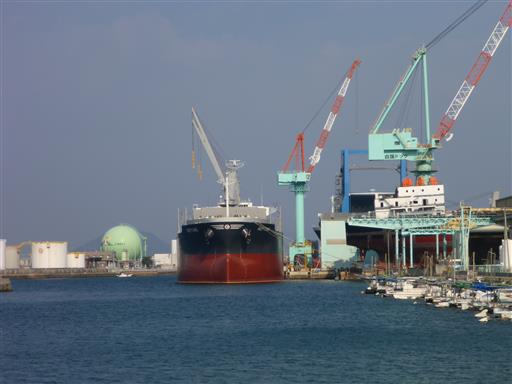
昼食をとったら本日の宿泊地である徳島まで行く間に、どこに行くか検討する。
いくつかの候補があったが、少し遠回りして阿波の土柱へ行くことにする。
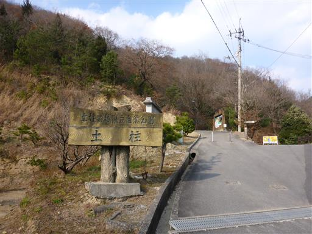
阿波の土柱。土柱とは風雨に浸食されなかった部分が柱状になったものだ。
少々寂れた観光地だが、世界三大土柱と宣伝されている。完全に自称だろうけれど…
規模は小さいが、日本では他に見られない珍しい地形であることは確かなようだ。
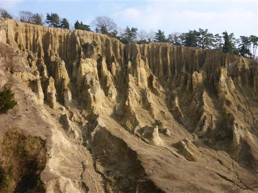
遊歩道が整備されているので少し歩いてみる。ジグザグ道を登っていく。
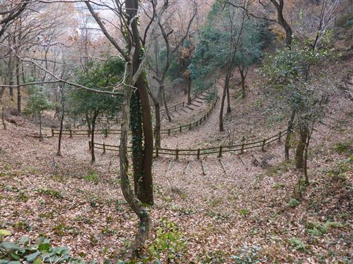
高台から土柱を見下ろす。上から見る景色もなかなか素晴らしい。
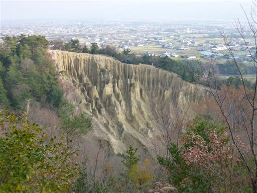
東屋でおやつ休憩。先ほど見学した土柱が一番規模の大きな
波濤嶽と呼ばれるものだが、他に5つの土柱があるらしい。
近くにあるはずの橘嶽を求めてここまで来たがなかなか見つからない。
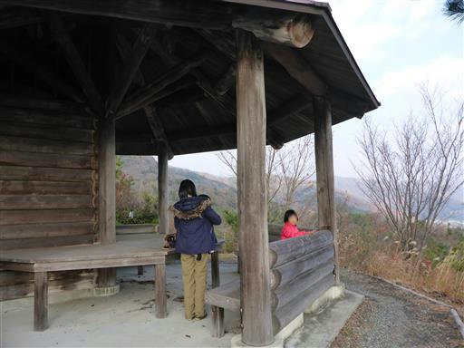
東屋から少し歩いたら橘嶽に無事到着する。
しかし規模が小さすぎて、ただの崖崩れにしか見えない。
学術的には貴重かもしれないが、苦労して来る意味は無かったようだ。
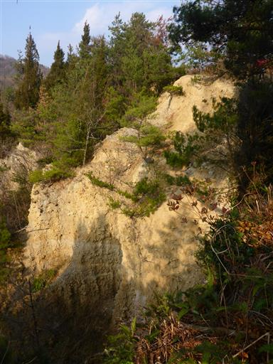
観光を終えたら徳島に向かう。この街も県庁所在地であり都会だ。
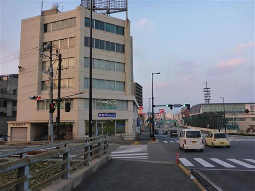
ここでの宿泊は素泊まり。ホテルに荷物を置いたら夕飯に出かける。
街の中心地に徳島城跡がある。

堀を渡ってしばし城内を歩く。
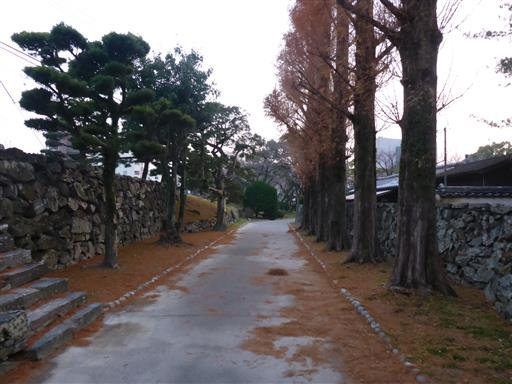
本日の夕食は「炭火焼鳥 鳥ぼん」で。
結構賑わっている店だ。味は良いが、少々高かった。
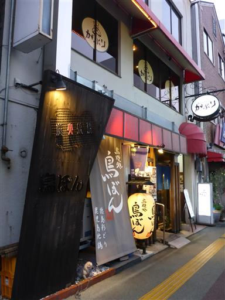
徳島駅前のそごうで明日の朝食用のパンを買ってホテルに戻る。
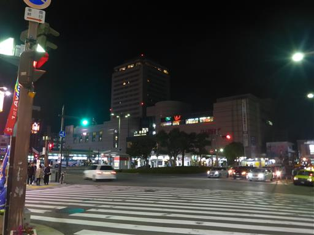